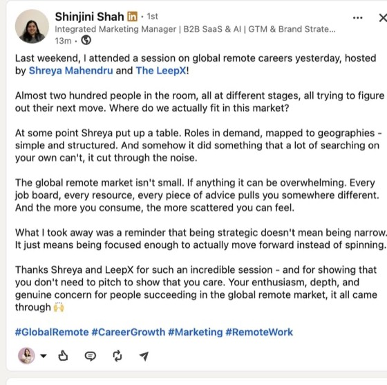
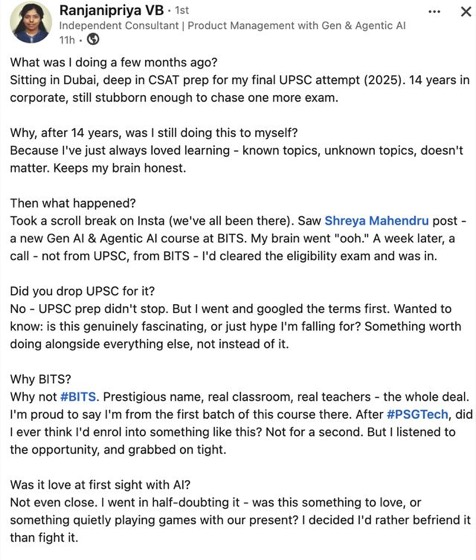
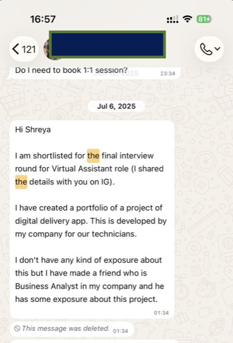
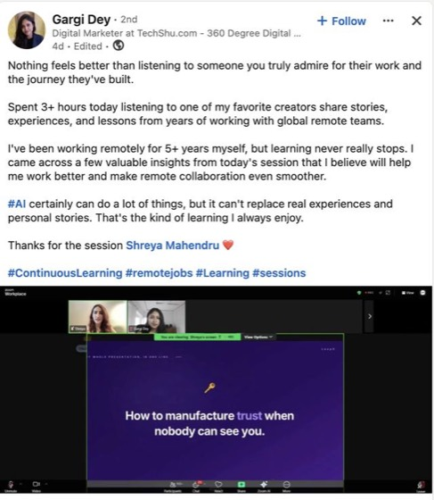
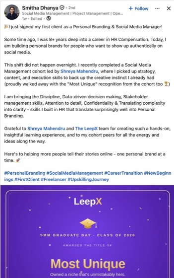
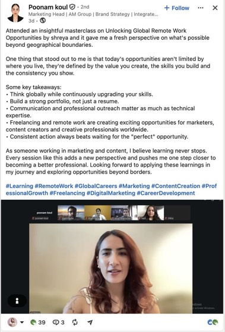
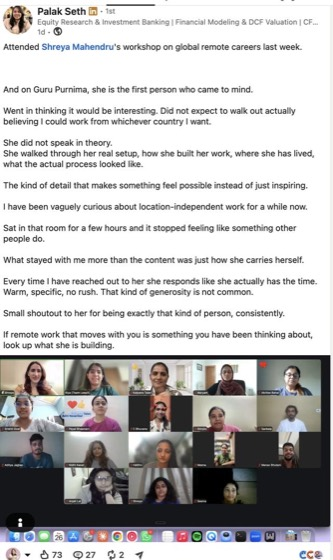
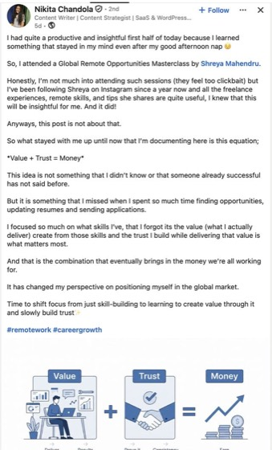
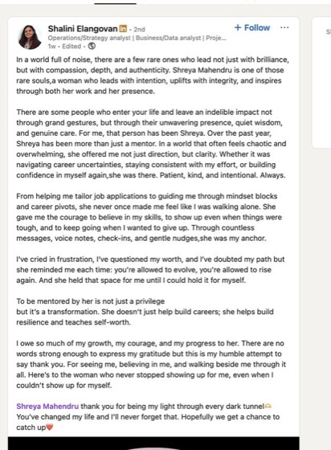

Hybrid setup: self-paced lessons you watch whenever you like, live Q&As with Shreya for accountability and progress tracking, and two live bonus sessions.
Modules drop weekly. Every Sunday Q&A is recorded too, so a missed Sunday is never a missed week.
Your strategy doc and where to start
Stack, workspace, payments and invoicing
Portfolio, projects and the self internship
LinkedIn, messages and what to actually say
What is landing and what to change
Answers, assignments and negotiation
Where to apply and how to follow up
Your certificate and what comes after your first role
Nothing here needs you free at a fixed hour to learn. You only need one Sunday a week to get unstuck.
Released weekly. Watch at 6 AM or 11 PM, rewatch as often as you need. Nothing to attend, nothing to miss, no falling behind because of a meeting that ran late.
Every Sunday for eight weeks, live with Shreya. Bring your profile, your outreach messages, your blockers. Ask anything about that week’s material and leave with an answer.
A fireside with a US hiring manager who hires from India, and a live session with Shreya on starting freelancing and side hustles alongside your job.
The teaching is on your schedule. The answers are live. That is the whole design.
Three assets built and reviewed during the cohort, and five things you carry with you long after week eight.
Written for one role, not for everyone, with impact lines a recruiter can scan in six seconds.
Rewritten so the right recruiter searching the right words actually lands on you.
Built from the templates inside. You write your own version in week four and get it reviewed.
Two or three pieces built during the self internship, reviewed before they go anywhere near an application.
Async communication, documentation, project tools, AI in your workflow, invoicing and payments.
Your answers, your assignment approach and your negotiation position worked out in advance.
Which roles are actually being hired for, in which geographies, and how to package your experience for one of them.
Plus a long term career plan you keep using after your first global role.
Plus an optional mini cohort on LinkedIn, Medium, Substack and newsletters, for the ones who want inbound.
₹21,000 of live sessions, included in your seat.
You keep every one of these after the cohort ends, and they keep working long after week eight.
And follow ups. The ones that actually get replies.
By geography and profile type
For the entire LeepX workflow
Their problem, your proof
Real ones, ready to copy and use
Behavioural and case study, with practice
Step by step, so global opportunities come to you
Every one of these has come up in a cohort before. Here is the straight answer.
Launchpad and Launchpad Plus are the same eight weeks. The only difference: Plus adds a 1:1 call with Shreya before you start, to lock the role or client you are going after. Answer these three honestly to know whether you need that call.
Can you name the exact role, or the exact kind of client, you are going after, in one sentence?
Yes or no?Are your CV and LinkedIn already written for that one role, not for everyone?
Yes or no?Have you sent applications or outreach for it in the last 30 days?
Yes or no?You already know your direction. You need the system, not the diagnosis.
See the seat ↓Most people land here. The 1:1 with Shreya fixes your direction before week one, so you do not spend eight weeks pointing at the wrong role.
See the seat ↓A no is not a failure, it is the actual starting line. Not sure of your answers? Take the free 3-minute assessment.
Bought piece by piece, everything inside comes to ₹98,000. You are not buying it piece by piece.
For you if you already know the role or client you are going after.
For you if any answer to those three questions was a no.
At some point Shreya put up a table. Roles in demand, mapped to geographies. And somehow it did something that a lot of searching on your own can’t, it cut through the noise.
Went in thinking it would be interesting. Did not expect to walk out actually believing I could work from whichever country I want. She did not speak in theory.
I just signed my first client. Some time ago I was 8+ years deep into a career in HR Compensation. Today I am building personal brands for people who want to show up authentically.First client
I focused so much on what skills I have that I forgot the value I create from them. It has changed my perspective on positioning myself in the global market.
Today’s opportunities aren’t limited by where you live, they’re defined by the value you create, the skills you build and the consistency you show.
I have been working remotely for 5+ years myself, but learning never really stops. AI can do a lot of things, but it cannot replace real experiences and personal stories.
At some point Shreya put up a table. Roles in demand, mapped to geographies. And somehow it did something that a lot of searching on your own can’t, it cut through the noise.
Went in thinking it would be interesting. Did not expect to walk out actually believing I could work from whichever country I want. She did not speak in theory.
I just signed my first client. Some time ago I was 8+ years deep into a career in HR Compensation. Today I am building personal brands for people who want to show up authentically.First client
I focused so much on what skills I have that I forgot the value I create from them. It has changed my perspective on positioning myself in the global market.
Today’s opportunities aren’t limited by where you live, they’re defined by the value you create, the skills you build and the consistency you show.
I have been working remotely for 5+ years myself, but learning never really stops. AI can do a lot of things, but it cannot replace real experiences and personal stories.
Straight from LinkedIn and the DMs · swipe →









Unedited screenshots. Public posts and messages, shared with permission. Personal details hidden. Individual results depend on individual effort. This programme does not guarantee a job.
General questions about LeepX, refunds and payments are answered on the main FAQ.
No. All the teaching is recorded and released weekly, so you learn whenever it suits you. The only live commitments are the eight Sunday Q&As and the two bonus sessions, and every one of those is recorded as well.
You bring questions from that week’s lessons and from your own work in progress: your CV, your LinkedIn, an outreach message that got no reply, a role you are unsure about. Shreya answers them live. It is a working session, not a lecture.
The recording goes up the same day, and you can drop your question into the 24 hour Q&A channel instead. You will not be behind.
Both are the same eight weeks. Plus adds a 1:1 call with Shreya before you start. If you can already name your target role, your CV and LinkedIn are written for it, and you have been applying for it, Launchpad is enough. If any of those is a no, take Plus: the call fixes your direction before you spend eight weeks in the wrong one.
Yes. The Resource Hub, the templates and the recordings stay with you, and you stay in the alumni community where opportunities get referred forward.
The modules are recorded so your calendar is not the reason you stop. The Sundays are live so you are never stuck alone with a question. The rest is you.
Lock your seat →